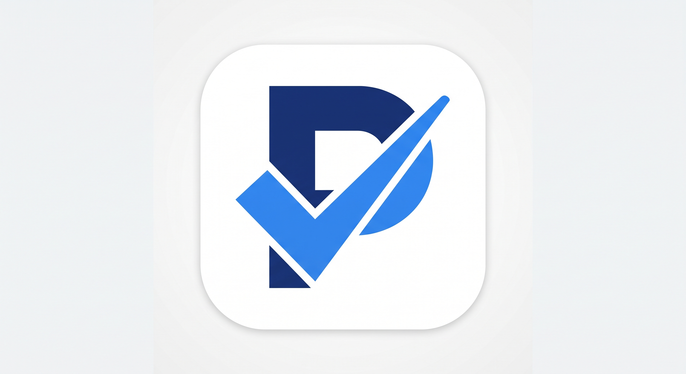
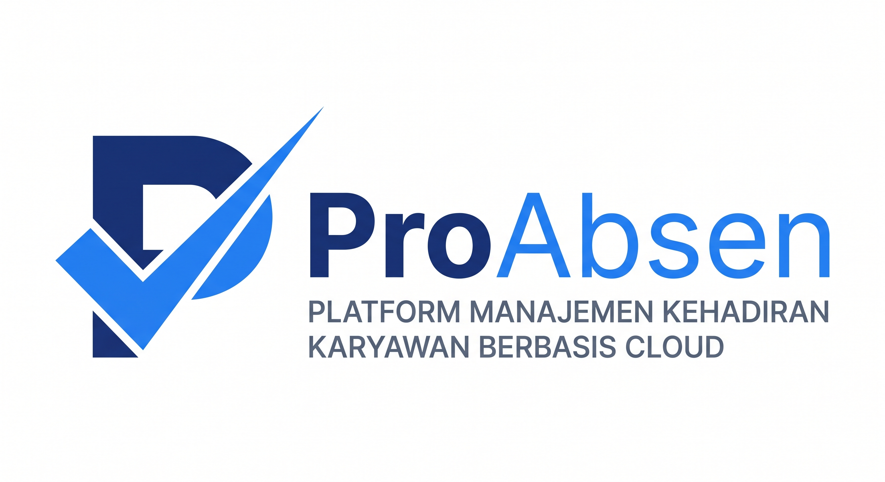

Check-in tervalidasi
Lokasi dan bukti swafoto membantu setiap catatan tetap dapat dipercaya.

ProAbsenPlatform kehadiran berbasis cloud
Catat kehadiran, atur shift, kelola izin, dan siapkan laporan dari satu tempat yang mudah dipakai semua orang.
Data terpusat untuk HR, atasan, dan karyawan.
Lebih rapi sejak hari pertama
Hilangkan rekap manual dan percakapan yang tercecer. Semua pihak melihat informasi yang sama, saat dibutuhkan.
Lokasi dan bukti swafoto membantu setiap catatan tetap dapat dipercaya.
Kantor, lapangan, atau hybrid tetap mengikuti kebijakan yang Anda tetapkan.
Keterlambatan, lembur, izin, dan ketidakhadiran langsung tersusun.
Dua sudut pandang
Kontrol operasional
Pantau status hari ini, tangani pengecualian, lalu unduh rekap tanpa berpindah aplikasi.
Pengalaman karyawan
Informasi shift, lokasi, dan status pengajuan tersedia langsung dari perangkat yang selalu dibawa.
Kantor PusatAnda berada di area absensi
Mulai tanpa proses panjang
Alur kerja ringkas membuat implementasi mudah dipahami sejak awal.
Atur lokasi, jam kerja, shift, dan aturan toleransi sesuai kebutuhan perusahaan.
Karyawan menerima akses dan dapat mulai mencatat kehadiran dari perangkatnya.
Dashboard menyusun aktivitas menjadi data yang siap ditindaklanjuti oleh HR.
Tetap fleksibel
Gunakan hanya modul yang dibutuhkan sekarang, lalu perluas saat operasional berkembang.
Kelola kantor dan area kerja lapangan dari satu akun.
Jadwal bergilir dan jam tambahan tercatat konsisten.
Pengajuan dan persetujuan terdokumentasi dengan jelas.
Informasi ditampilkan sesuai tanggung jawab setiap peran.
Pertanyaan umum
Jawaban singkat sebelum Anda melihat produknya lebih dekat.
Ya. Lokasi kerja dapat ditentukan dengan geofence, sehingga tim lapangan tetap mengikuti area dan jadwal yang sudah ditetapkan.
Tidak. Karyawan dapat menggunakan perangkat yang biasa dipakai untuk mengakses layanan perusahaan selama memiliki koneksi internet.
Bisa. Rekap kehadiran dapat diekspor agar proses penggajian dan administrasi HR tidak membutuhkan input ulang.
Durasi mengikuti jumlah lokasi, kebijakan, dan data karyawan. Tim ProAbsen akan membantu menyiapkan alur implementasi yang sesuai.

Lihat langsung
Ceritakan pola kerja tim Anda. Kami akan menunjukkan alur ProAbsen yang paling relevan.
Hubungi tim kami